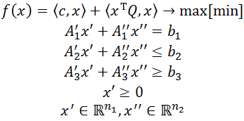

|  |
Здесь n – размерность пространства всех переменных. На переменные x' наложено ограничение „≥ 0”, их количество – n1. На остальные переменные, x'', такого ограничения не наложено, их количество – n2. n1 + n2 = n. Ai', Ai'', bi – матрицы коэффициентов и векторы правых частей соответствующих групп ограничений. Матрицы Ai' соответствуют коэффициентам при переменных, на которых наложено условие неотрицательности, матрицы Ai''– всем остальным переменным. Ограничениям-равенствам соответствуют коэффициенты и правые части, которым соответствует i = 1. Их количество – m1. Ограничениям-неравенствам типа ≤ соответствуют коэффициенты и правые части, которым соответствует i = 2. Их количество – m2. Ограничениям-неравенствам типа ≥ соответствуют коэффициенты и правые части, которым соответствует i = 3. Их количество – m3. |
| n = | (размерность пространства переменных). | |
| n2 = | (количество переменных, которые могут принимать значения меньше нуля). | |
| m1 = | (количество ограничений-равенств). | |
| m2 = | (количество ограничений-неравенств „≤”). | |
| m3 = | (количество ограничений-неравенств „≥”). | |
|
|
||